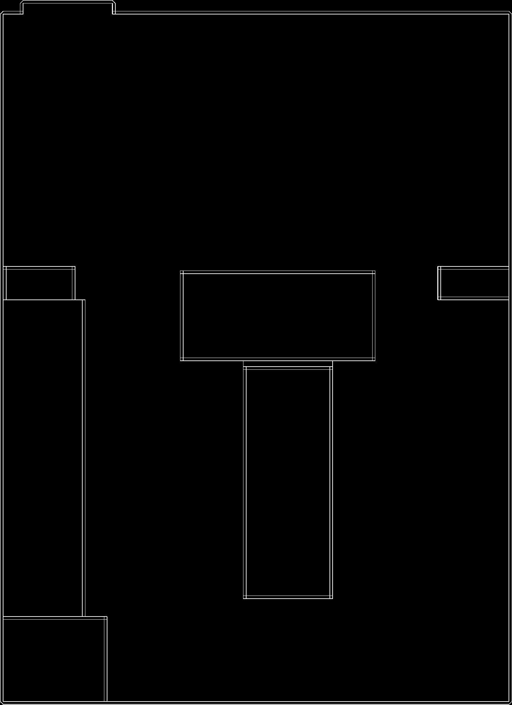

<button id="start-scan">Start Beacon Scan</button>

<div id="status">Not connected</div>

<div id="map-container" style="display: none;">
  
</div>

<script>
  const beacon1 = "FB:01:4B:54:27:3E".toLowerCase();
  const beacon2 = "CF:15:06:D2:B2:21".toLowerCase();
  const mapContainer = document.getElementById("map-container");
  const status = document.getElementById("status");

  let isScanning = false;
  let scanRef = null;

  document.getElementById("start-scan").addEventListener("click", async () => {
    if (isScanning) return;
    isScanning = true;
    status.textContent = "Scanning for beacons...";

    try {
      // This uses `navigator.bluetooth.requestLEScan`, only available in some browsers
      scanRef = await navigator.bluetooth.requestLEScan({
        acceptAllAdvertisements: true
      });

      navigator.bluetooth.addEventListener("advertisementreceived", event => {
        const mac = event.device.id.toLowerCase();
        const rssi = event.rssi;

        if (mac === beacon1 || mac === beacon2) {
          status.textContent = `Detected ${mac} (RSSI: ${rssi})`;
        }

        // Compare proximity
        const devices = {
          [beacon1]: -Infinity,
          [beacon2]: -Infinity
        };

        if (mac === beacon1 || mac === beacon2) {
          devices[mac] = rssi;
        }

        const closer = devices[beacon1] > devices[beacon2] ? beacon1 : beacon2;

        if (closer === beacon1) {
          mapContainer.style.display = "block";
        } else {
          mapContainer.style.display = "none";
        }
      });

    } catch (error) {
      console.error("Bluetooth error:", error);
      status.textContent = "Bluetooth error: " + error.message;
    }
  });
</script>
